Project Title
Description goes here.
Role
—
Duration
—
Status
—
Key Impact
—
Tech Stack
Computer Engineering Student
Engineering intelligent solutions where hardware and software work together.
About Me
I'm Rida Zahra, a Computer Engineering student at NUST (National University of Sciences and Technology), Pakistan, with a strong academic record and expected graduation in 2027.
I'm passionate about building systems that live at the intersection of hardware and software — from deploying real-time AI models on edge devices to designing SoC architectures, developing IoT prototypes, and building full-stack applications.
With hands-on internship experience in SoC chip design, machine learning, and Python development, I continuously seek challenges that push the boundaries of what embedded intelligence can do.
At a Glance
Technical Skills
From RTL design and RISC-V assembly to deep learning pipelines and full-stack web development.
Portfolio
A selection of real-world engineering projects across AI, embedded systems, and software development.
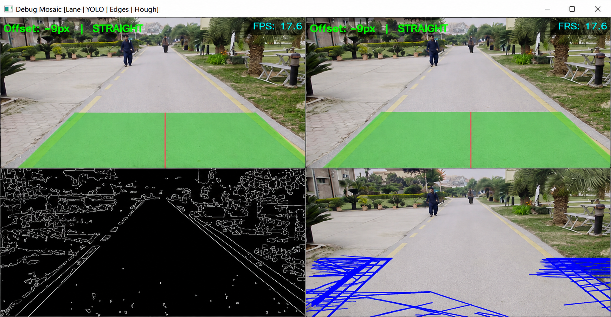
Lane and obstacle detection system with real-time driving decisions (Forward, Stop, Turn, Reverse) from camera inputs. Optimized for CPU-only performance at ~12 FPS with multi-threaded processing.
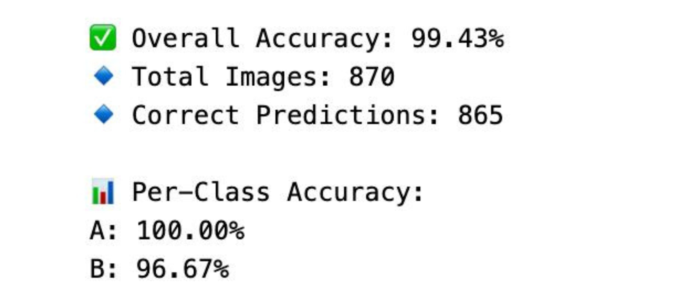
Deep CNN achieving ~99.4% accuracy across 29 ASL classes. Handled full pipeline: dataset prep, architecture design, regularization, and conversion to TensorFlow Lite for edge deployment.
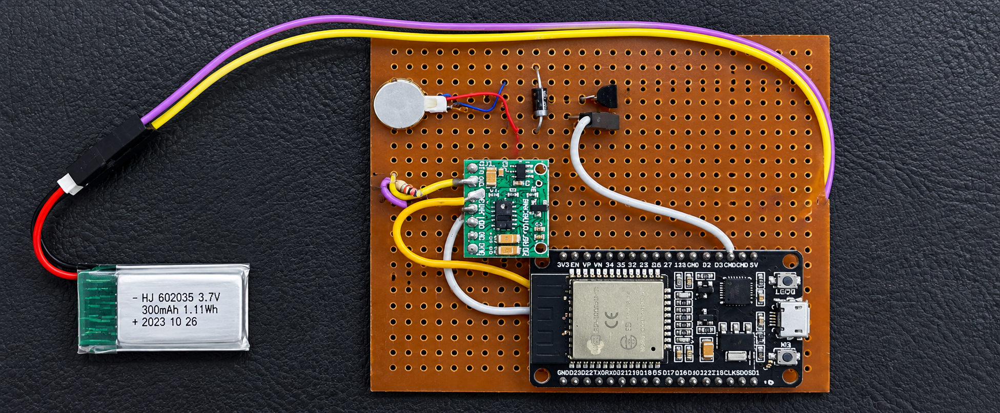
Wearable stress-monitoring device using ESP32 with BLE connectivity. Integrates simulated stress-detection sensors and haptic feedback for user relaxation. Validated on Wokwi and hardware prototype.
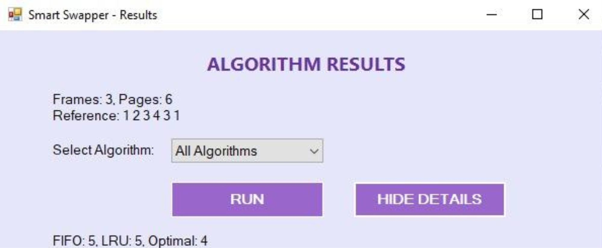
Windows Forms simulator for FIFO, LRU, and Optimal page replacement algorithms. Visualizes page frame changes and compares algorithm performance using page fault analysis.
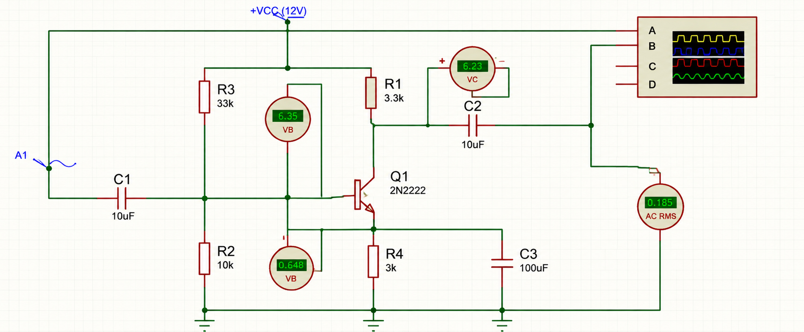
Common-emitter BJT audio amplifier circuit achieving ≥50x voltage gain in the active region for a 30 mV peak-to-peak input, with a custom biasing network and bypass capacitors driving an 8Ω/16Ω speaker.
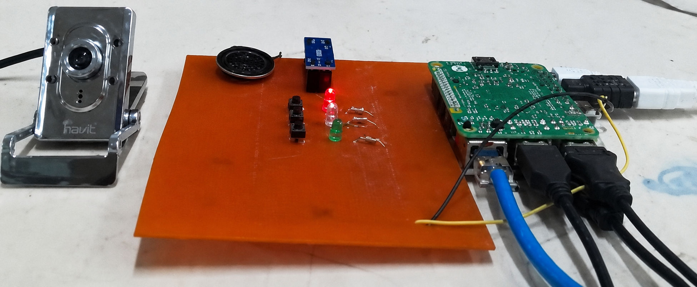
Developed SignEdge-ASL, a real-time American Sign Language (ASL) alphabet recognition system optimized for edge devices like Raspberry Pi. Leveraging a retrained deep CNN with ONNX, the project supports 29 ASL classes and enables low-latency inference. It features a lightweight web interface integrated with Firebase and the Telegram Bot API, allowing dynamic audio sharing, real-time updates, and seamless communication without a dedicated backend. This deployment-focused project demonstrates practical AI at the edge, combining gesture recognition, IoT, and mobile integration in a scalable, real-world system.
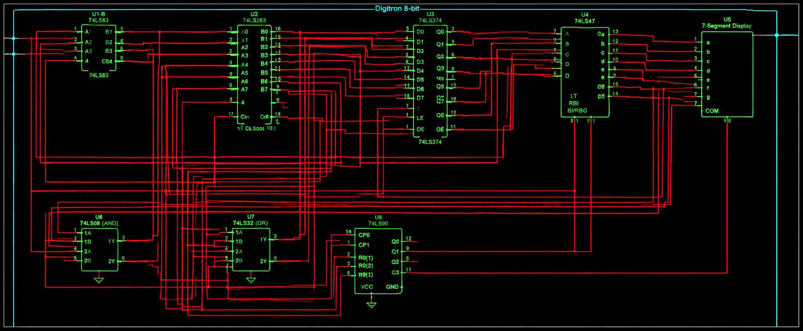
5-stage pipelined RISC-V processor in Verilog implementing data forwarding, load-use stalling, and hazard detection at the RTL level, verified with a custom testbench and synthesized in Xilinx ISE.
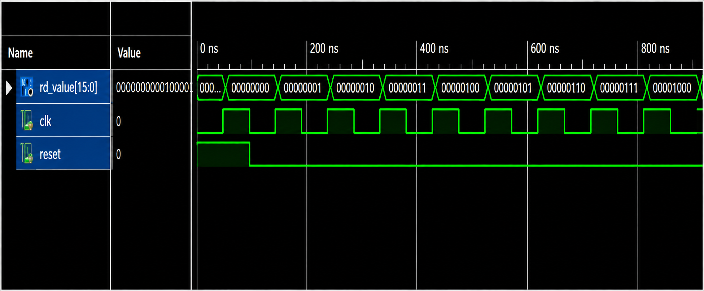
Clock-driven 16-bit processor in Verilog with an instruction decoder that dispatches opcodes between a main ALU-driven processor and a co-processor for specialized operations.
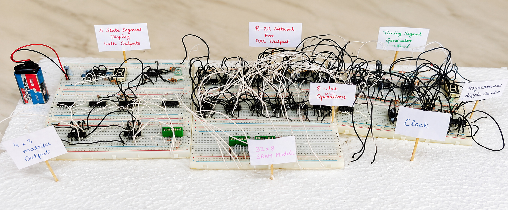
4-bit ALU supporting 8 arithmetic/logical operations with seven-segment display output, progressing from automatic selector-driven demo to counter-controlled and multiplexed operand/result display.
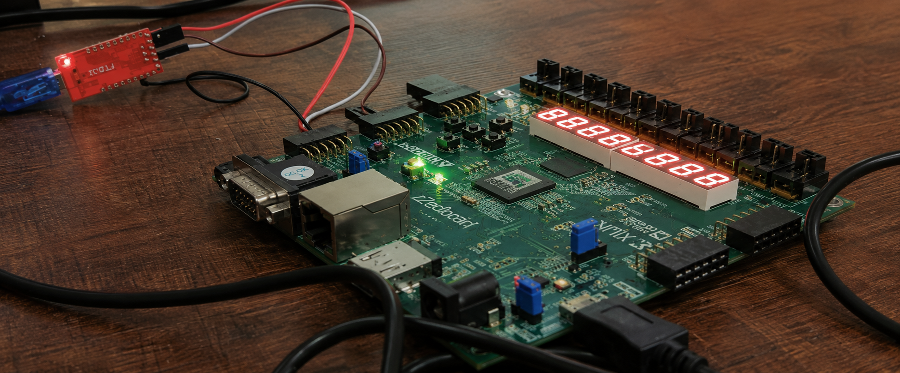
Built and deployed FreeRTOS applications with task scheduling, inter-task communication, and synchronization on a custom RISC-V SoC, cross-compiled to ELF and validated on QEMU and FPGA hardware.
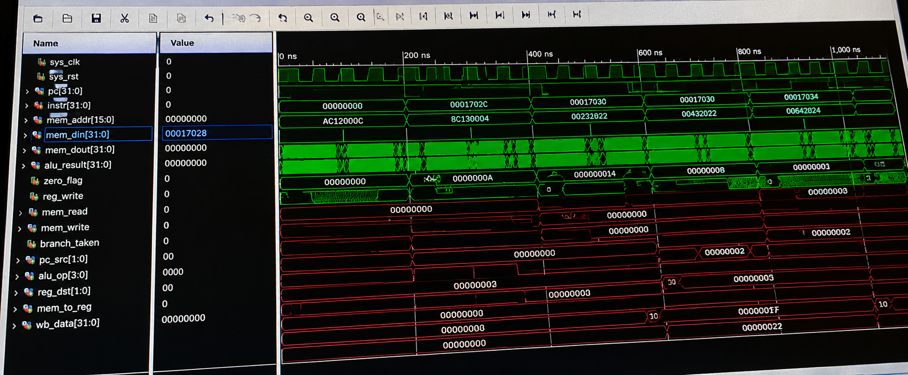
Extended a custom RISC-V processor from Machine mode to Supervisor and User privilege levels, implementing privilege-level CSRs (sstatus, stvec, satp) and exception delegation for Linux support.
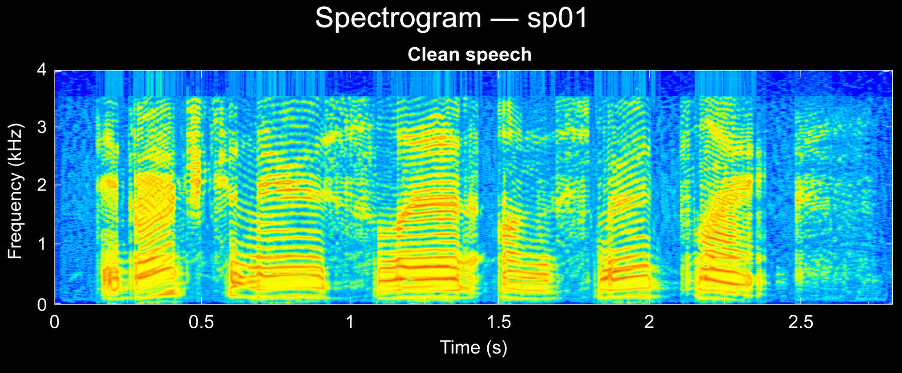
Two-stage MATLAB speech enhancement system suppressing airport noise using the NOIZEUS corpus at 5 dB SNR. Combines a 256th-order FIR high-pass filter with a decision-directed Wiener post-filter, achieving a mean 2.28 dB SegSNR improvement across all 30 test sentences.
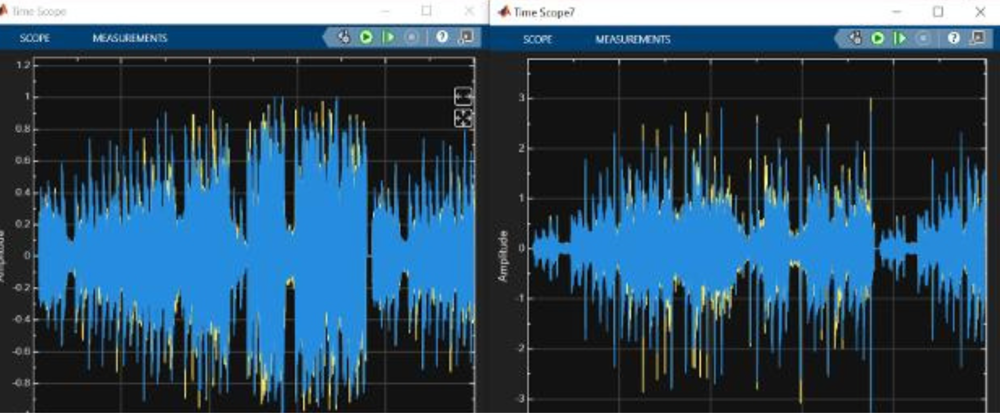
Real-time 5-band graphic equalizer built in MATLAB and Simulink with Butterworth bandpass filters, per-band gain control, and an interactive GUI for live audio visualization and playback.
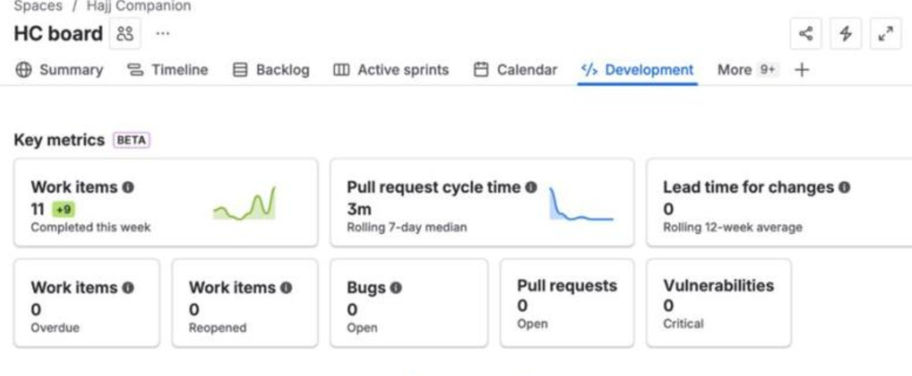
Full-stack web app providing day-wise Hajj & Umrah guidance with Arabic/English support. Features authentication, session management, checklists, progress tracking, and interactive maps. Built with Agile/Scrum.
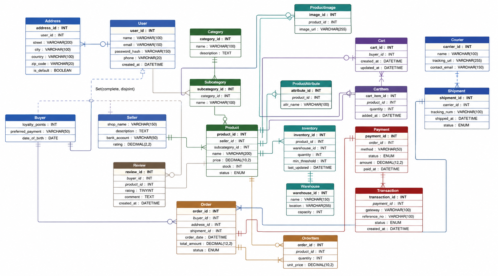
Full-stack e-commerce marketplace with 21+ entity normalized database. Implements SQL triggers, views, transactions, and analytical queries. Buyer/seller modules, cart, orders, payments, dashboards.
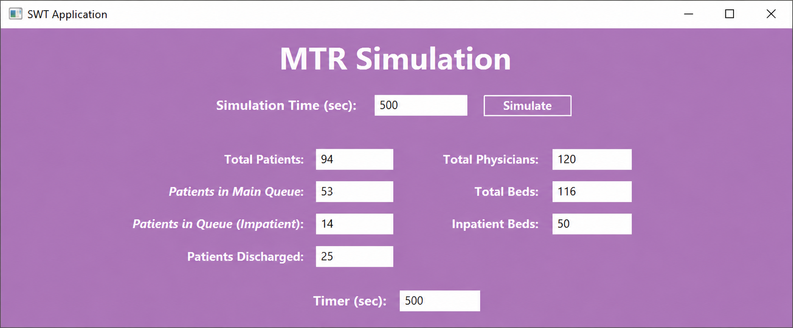
Discrete event simulation modeling patient arrival, triage, and treatment. Applies queuing theory to analyze wait times and resource allocation. Achieved 20% simulated reduction in wait times.
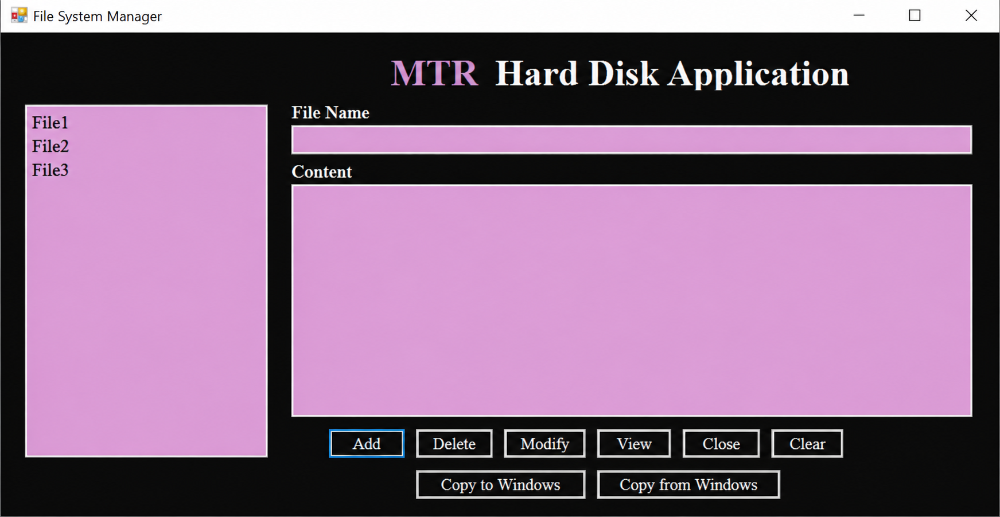
Developed a C++-based virtual file storage system that mimics a real hard disk using a 10MB file. The system supports core file operations like create, delete, modify, view, and defragment, using custom-designed data structures such as vectors, unordered maps, linked lists, and min-heaps. Efficient block management and metadata handling were implemented to simulate real-world file system behavior.
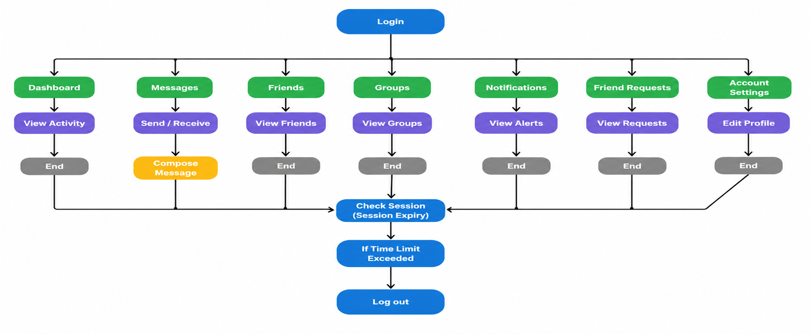
C++ console application handling multiple to-do list categories — daily tasks, studies, groceries, travel, finance, and health — with a login system and built-in FAQs.
Experience
Hands-on internship experience in SoC design, machine learning, and Python development.
CARE Private Limited
📍 Islamabad, Pakistan
Sejong University, South Korea × NUST, Pakistan
📍 Hybrid — NUST, Islamabad, Pakistan
ChipXprt Private Limited
📍 Islamabad, Pakistan
Codic Solution
📍 Remote
HiSkyTech
📍 Remote
Research
Independent and ongoing research projects exploring signal processing, audio analysis, 3D vision, and computational AI, with work currently in development and not yet published.
AI & Computational Research
📍 Independent Research
Signal Processing & Audio Analysis
📍 Independent Research
Signal Processing & Audio Analysis
📍 Independent Research
3D Vision & Computational Research
📍 Independent Research
Education
National University of Sciences and Technology (NUST)
Relevant Coursework
Achievements
Competitions won, communities led, and recognition earned.
Won first place at the NSTP Pitch Bazar entrepreneurship competition, presenting an innovative technology solution.
Won the campus round of the prestigious international Hult Prize social entrepreneurship competition.
Placed 1st Runner-Up in COMPPEC 2025, a nationwide technical idea pitching competition.
Placed 2nd Runner-Up in the Zindagi Prize ideathon for innovative business ideas.
Maintaining a 3.94 / 4.00 CGPA with Summa Cum Laude distinction at NUST.
Elected Vice President of BRISC, demonstrating leadership and technical community involvement.
Entrepreneurship
CFO & Co-Founder
Co-founded an e-commerce stationery brand. Leading financial operations, budgeting, and pricing strategy while supporting online store growth and brand expansion on Instagram.
Active Founder
Since Jan 2025
Get In Touch
Interested in collaborating, discussing opportunities, or connecting professionally? Whether it's an internship, research project, or just a conversation about engineering — feel free to reach out.
Open to internships, research collaborations, freelance projects, and full-time roles.
Description goes here.